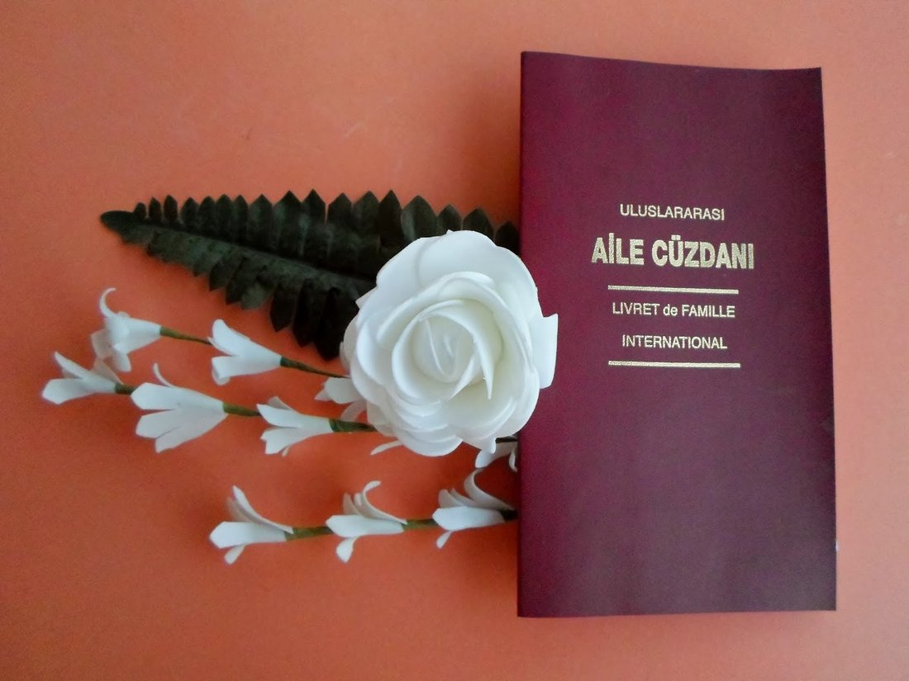

海牙认证、全球认可、从头到尾办理——您唯一需要计划的就是婚礼本身。
作为外国夫妇在土耳其结婚？我们的VIP快速通道结婚服务管理一切——从初次咨询到颁发您的海牙认证家庭簿（国际结婚证书），完全合法化并全球认可。
我们收集并合法化您的文件，与相关土耳其当局协调，并确保一切——包括您的结婚记录——都经过海牙认证并在您需要的任何地方得到认可，无论是在土耳其还是国外。
发送您的国籍，我们将发送您的准确清单——护照、单身证明、照片等。
我们准备宣誓翻译并代表您处理所有公证人认证，24/7优先处理。
我们从头到尾协调您与土耳其市政当局的结婚申请和登记。
您的家庭簿（Aile Cüzdanı）被颁发、海牙认证并交付——在所有92个海牙国家得到认可。

在您的婚姻登记那一刻颁发，Aile Cüzdanı是土耳其官方的国际家庭记录小册子——一本装帧精美、金字烫印的文件，作为您婚姻的主要证明。
一旦经过海牙认证，它在所有92个海牙公约国家得到认可——一份随身携带的纪念品，无论生活下一步带您去哪里。
市政结婚预约和公证人出席将提前预订，确保您的访问顺利——请在WhatsApp上告知我们您的日期，我们将安排一切。